ITY1102 · Arquitectura de Sistemas de Inteligencia Artificial · Evaluación Parcial N°2
Implementación de arquitectura IA escalable y segura en AWS
Plantilla arc42 extendida · continuación de la EP1 (v1.1.0)
| Asignatura | Arquitectura de Sistemas de Inteligencia Artificial (ITY1102) |
|---|---|
| Evaluación | Evaluación Parcial N°2 (EP2) · Encargo |
| Docente | Mateo Serna Fernández |
| Equipo | Equipo 1 |
| Integrantes | Nicolás Estefanía, Diego Tapia y Ariel Espinoza |
| Versión del sistema | 2.0.0 |
| Fecha | 25 de octubre de 2026 |
| Fecha | Versión | Autor | Descripción |
|---|---|---|---|
| 10/09/2026 | 0.1.0 | N. Estefanía, D. Tapia, A. Espinoza | Versión inicial de la documentación arc42 basada en el repositorio. |
| 13/09/2026 | 1.0.0 | N. Estefanía, D. Tapia, A. Espinoza | Dimensionamiento inicial (Supabase/PaaS) y primeros diagramas. |
| 20/09/2026 | 1.1.0 | N. Estefanía, D. Tapia, A. Espinoza | EP1: simulación de arquitectura nativa en AWS (ECS, RDS, Cognito, Bedrock, S3, CloudFront). |
| 25/10/2026 | 2.0.0 | N. Estefanía, D. Tapia, A. Espinoza | EP2: C4 completo (3 niveles), evolución a microservicios + Event-Driven, dimensionamiento con AWS Pricing Calculator, Docker/ECS/EKS/ALB, seguridad, monitoreo, alta disponibilidad y despliegue real en AWS con pruebas de carga y de failover. |
TodoBarato AI es una plataforma de inteligencia de productos y precios: centraliza las ofertas de distintas tiendas (SP Digital, Paris y otras), las normaliza en un catálogo canónico y ofrece dos capacidades de IA, un asistente conversacional (RAG híbrido + herramientas sobre el catálogo) y un agente de ahorro (LangGraph) que crea alertas de precio y listas de compra. La EP1 (v1.1.0) definió los componentes y simuló la arquitectura en AWS; esta versión completa el diseño técnico y lo despliega en AWS para verificar cada decisión con mediciones. El documento sigue la plantilla arc42 (Starke & Hruschka, 2023), los diagramas usan el modelo C4 (Brown, 2018) y las decisiones se contrastan con los pilares del AWS Well-Architected Framework (Amazon Web Services, 2024).
| Tipo | Requisito | Meta medible |
|---|---|---|
| Funcional | Buscar y comparar productos y precios por tienda, con historial. | Catálogo p95 < 2 s |
| Funcional | Asistente y agente en lenguaje natural con evidencia del catálogo. | ≤ 3 llamadas a herramientas por consulta |
| Funcional | Ingesta periódica de tiendas sin duplicar productos ni corridas. | Cada 6 h; 0 corridas solapadas |
| No funcional | Disponibilidad ante la caída de una instancia o de una zona. | ≥ 99,5 % mensual; RTO 15 min; RPO 5 min |
| No funcional | Escalabilidad horizontal de la API sin estado. | 2 → 4 réplicas automáticas al 60 % de CPU |
| No funcional | Seguridad: cifrado, mínimo privilegio, secretos fuera del código. | TLS en tránsito, AES-256 en reposo |
| No funcional | Costo acotado en la etapa de lanzamiento. | < USD 200/mes con 5.000 usuarios |
1.2 Objetivos de calidad (ISO 25010): disponibilidad, escalabilidad, seguridad, mantenibilidad y eficiencia; cada uno se verifica con una medición en la sección 10.
| Rol | Objetivo / alcance |
|---|---|
| Usuario final (consumidor) | Buscar, comparar precios entre tiendas y conversar con el asistente o el agente de ahorro. |
| Cliente empresa (retailer) | Monitorear precios de la competencia, ofertas e historial para decidir su pricing. |
| Administrador del sistema | Gestionar ingestas, validar especificaciones y vigilar la salud operacional. |
| Equipo de desarrollo | Evolucionar la plataforma con pruebas y despliegues sin caída. |
| Código | Restricción | Antecedente |
|---|---|---|
| RT1 | Backend en Python 3.12 con FastAPI; agente con LangGraph. | app/main.py, app/agent/ |
| RT2 | PostgreSQL con SQLAlchemy 2 y migraciones Alembic. | app/db.py, alembic/ |
| RT3 | Frontend Next.js 16 con SSR y proxy de /api/v1: requiere un servidor Node, no solo archivos estáticos. | frontend/next.config.ts |
| RT4 | Inferencia de IA por API (sin GPU local); proveedores alternables por LLM_PROVIDER. | app/ai/providers/factory.py |
| RT5 | Autenticación por JWT validado con JWKS (hoy Supabase Auth; diseño objetivo Cognito). | app/core/security.py |
| Permitido | Bloqueado por la política de la cuenta |
|---|---|
| EC2 (hasta t3.medium), Auto Scaling, ALB, RDS, S3, SNS, EventBridge, CloudWatch, Parameter Store | ECS, EKS, ECR, SQS, Secrets Manager, Bedrock (InvokeModel), Price List API, crear roles IAM (único perfil de EC2: myS3Role, s3:*), modificar instancias RDS |
Por eso el despliegue real usa EC2 + Auto Scaling + Docker con imágenes en S3, y lo bloqueado (ECS Fargate, ECR,
SQS, Secrets Manager, Bedrock, Cognito) se mantiene como diseño de producción, con su configuración de referencia en
infra/ecs/ e infra/kubernetes/.
2.3 Organizacionales y convenciones: equipo de 3 estudiantes, presupuesto de laboratorio de USD 20 y rate-limiting de las tiendas; API REST bajo /api/v1, secretos fuera del repositorio, pytest antes de cada despliegue y prefijo tb-ep2 en todo recurso AWS.
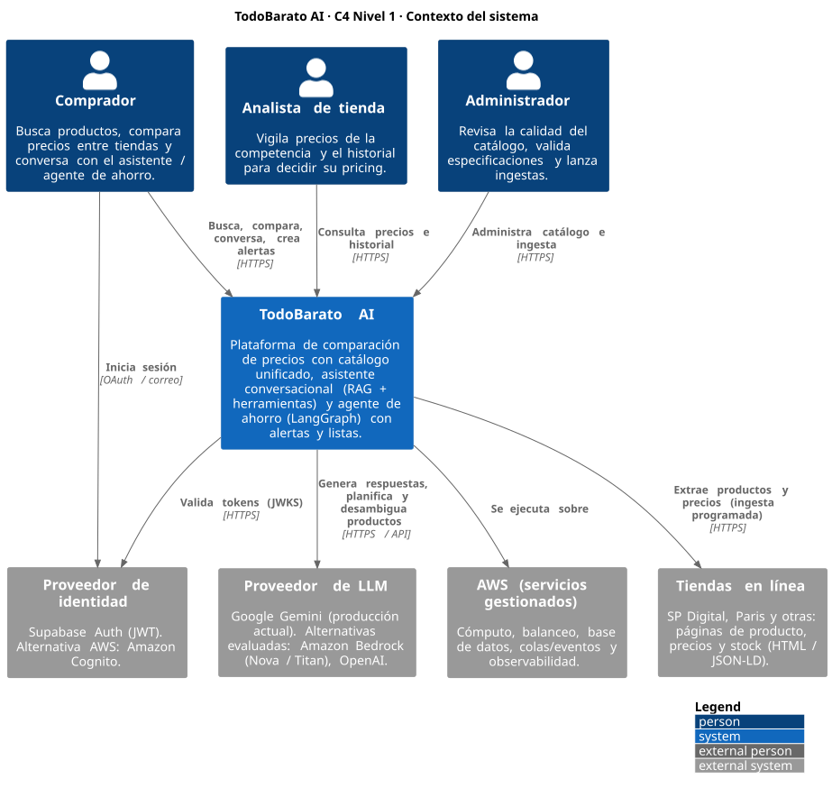
| Vecino | Responsabilidad | Relación |
|---|---|---|
| Consumidor / empresa / admin | Consulta catálogo, compara, conversa con el asistente, define alertas, administra ingestas. | HTTPS vía ALB, JWT |
| Tiendas en línea | Fuente de productos, precios y stock (HTML / JSON-LD). | Extracción programada |
| Proveedor de LLM | Generación, planificación del agente y desambiguación de productos. | API HTTPS, timeout 60 s |
| Proveedor de identidad | Registro, inicio de sesión y emisión de JWT. | Validación por JWKS |
| AWS | Cómputo, balanceo, base de datos, eventos y observabilidad gestionados. | Región us-east-1 |
La EP1 eligió un monolito modular para reducir complejidad. Con la API escalando a varias réplicas aparecieron dos problemas: la ingesta escala junto con la API aunque tenga otro ritmo, y el scheduler interno corría una vez por réplica (defecto detectado al desplegar). La estrategia v2.0.0 conserva el mismo código modular pero lo despliega como tres servicios y desacopla la ingesta con eventos, siguiendo el criterio de separar por ritmo de cambio y de escalado (Newman, 2021).
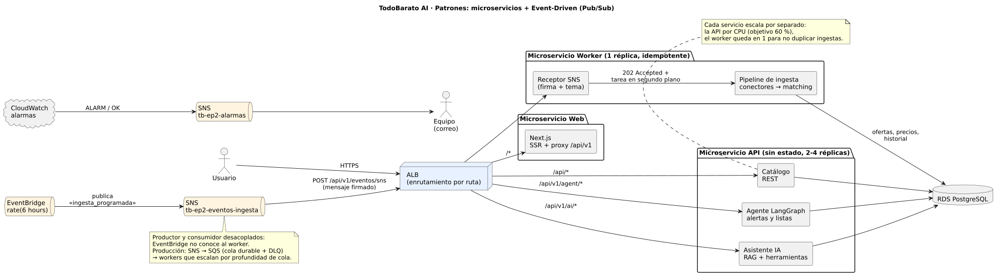
| Patrón | Aplicación | Requisito funcional que resuelve |
|---|---|---|
| Microservicios | Web, API y worker con su propio grupo de Auto Scaling y target group; el ALB enruta por ruta. | Búsqueda y chat escalan con los usuarios; la ingesta, con su calendario. Una falla de ingesta no afecta las búsquedas. |
| Event-Driven / Pub-Sub | EventBridge publica ingesta_programada en SNS; SNS entrega un mensaje firmado al worker; el worker responde 202 y procesa en segundo plano. |
Ingesta periódica de precios sin acoplar productor y consumidor; reintentos con backoff de SNS. |
| Singleton + lock | Scheduler solo en el worker (INGESTION_SCHEDULER_ENABLED); un lock impide corridas solapadas. | Ingesta sin duplicar productos ni corridas. |
| RAG + Tool use | El LLM responde solo con evidencia recuperada y herramientas del catálogo. | Respuestas verificables y acotadas en tokens. |
| Adapter + Factory | Interfaz común para Gemini, OpenAI o Bedrock. | Cambiar de proveedor sin tocar el resto. |
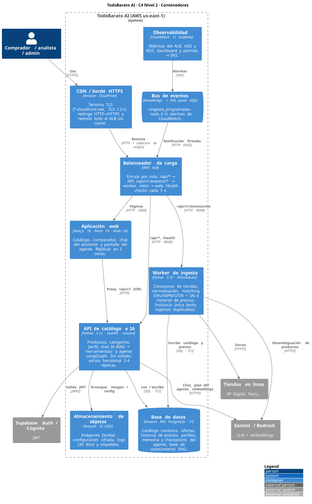
| Contenedor | Responsabilidad | Tecnología |
|---|---|---|
| CDN / borde HTTPS | Termina TLS con certificado *.cloudfront.net, redirige HTTP → HTTPS y reenvía al ALB sin caché. | Amazon CloudFront |
| Balanceador | Enruta por ruta y retira réplicas no sanas. | AWS ALB |
| Aplicación web | Interfaz, SSR y proxy de /api/v1 hacia la API. | Next.js 16, React 19, Node 24 |
| API de catálogo e IA | REST de catálogo, chat (RAG + herramientas) y agente. Sin estado. | FastAPI, SQLAlchemy 2, LangGraph |
| Worker de ingesta | Conectores, normalización, matching e historial; único consumidor de eventos. | APScheduler, httpx, BeautifulSoup |
| Base de datos | Catálogo, ofertas, historial, perfiles, memoria y checkpoints del agente. | Amazon RDS PostgreSQL 17 |
| Bus de eventos | Desacopla el disparo de la ingesta y las alarmas. | EventBridge + SNS (producción: + SQS) |
| Almacenamiento | Imágenes, configuración cifrada, logs y respaldos. | Amazon S3 (SSE) |
| Observabilidad | Métricas, dashboard y alarmas. | Amazon CloudWatch |
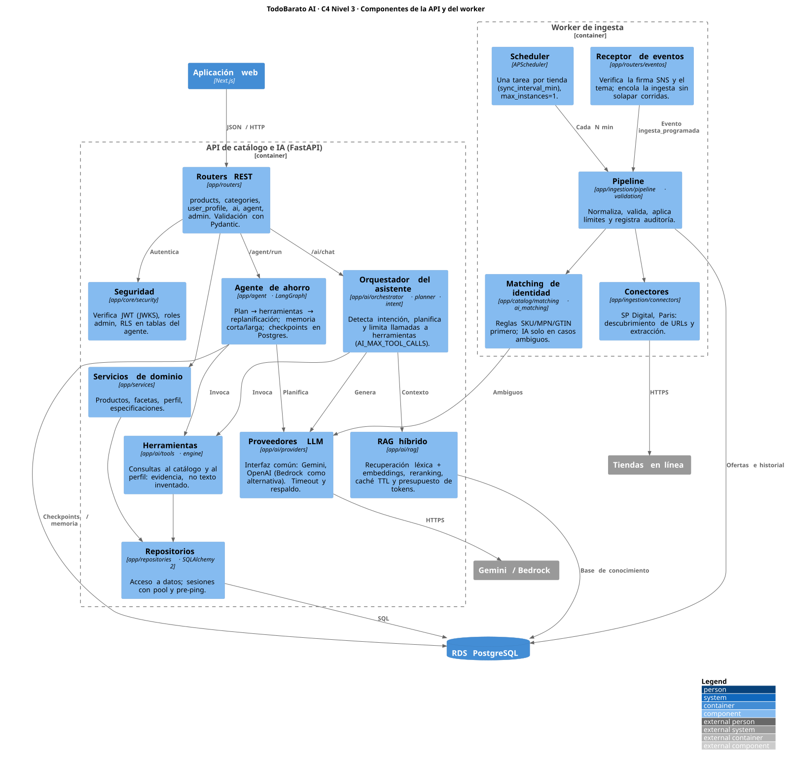
app/).| Componente | Responsabilidad | Se relaciona con |
|---|---|---|
| Routers REST | Endpoints de productos, categorías, perfil, IA, agente y admin; validación Pydantic. | Seguridad, servicios, orquestador, agente |
| Seguridad | Verifica el JWT (JWKS), roles de administrador y RLS del agente. | Proveedor de identidad |
| Servicios / repositorios | Reglas de negocio y acceso a datos con sesiones en pool (pre-ping). | RDS PostgreSQL |
| Orquestador del asistente | Detecta intención, planifica y limita las herramientas por consulta. | RAG, herramientas, proveedores LLM |
| RAG híbrido | Recuperación léxica + embeddings, reranking, caché TTL, presupuesto de tokens. | Base de conocimiento en RDS |
| Agente de ahorro | Grafo LangGraph: plan → herramientas → replanificación; memoria y checkpoints. | Herramientas, LLM, RDS |
| Proveedores LLM | Adapter común para Gemini, OpenAI o Bedrock, con timeout. | API del LLM |
| Scheduler / receptor de eventos | Disparan la ingesta: por calendario o por evento SNS firmado. | Pipeline de ingesta |
| Pipeline, conectores, matching | Extraen, validan y normalizan; resuelven identidad por SKU/MPN/GTIN y, si es ambigua, con IA. | Tiendas, LLM, RDS |
El orquestador aplica «reglas primero, IA después»: solo los productos ambiguos llegan al LLM, lo que reduce costo y alucinaciones. El agente persiste su estado en Postgres, por lo que cualquier réplica continúa una conversación: la API queda sin estado y escala horizontalmente (Newman, 2021).
Diagramas de secuencia en el Anexo A (Figuras A8 y A9).
Consulta: el ALB elige la réplica con menos solicitudes pendientes; la API valida el JWT, el orquestador arma el contexto RAG (top-k 6, ≤ 1.600 tokens), el LLM decide qué herramienta usar (máx. 3) y redacta con evidencia del catálogo. Ingesta: EventBridge publica cada 6 h; SNS entrega por HTTP al ALB, que enruta solo al worker; el worker verifica firma y tema, responde 202 y sincroniza cada tienda en segundo plano, sin solapar corridas.
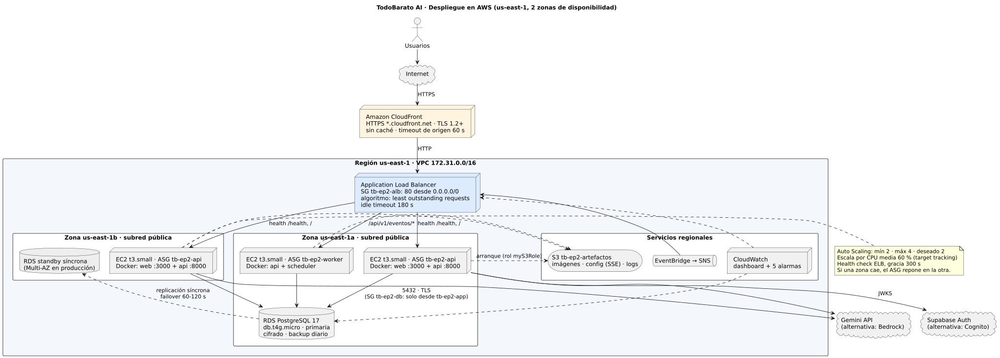
| Elemento | Desplegado en AWS Academy | Diseño de producción (continuidad EP1) |
|---|---|---|
| Orquestación | Auto Scaling Groups sobre EC2 con Docker | ECS Fargate (infra/ecs/); alternativa EKS |
| Imágenes y CI/CD | Build en EC2 temporal → S3 | GitHub Actions → ECR → ECS (igual que EP1) |
| Borde y frontend | CloudFront (HTTPS) → ALB → contenedor Next.js | Igual, con dominio propio, certificado ACM y AWS WAF |
| Base de datos | RDS PostgreSQL 17, una zona | RDS Multi-AZ |
| Eventos | EventBridge → SNS → worker | EventBridge → SNS → SQS (+ DLQ) → workers |
| Secretos | Config cifrada en S3 privado | Secrets Manager con rotación |
| Identidad / IA | Supabase Auth · Gemini | Cognito · Bedrock |
| Supuesto de carga (lanzamiento, 12 meses) | Valor | Derivación |
|---|---|---|
| Usuarios activos al mes | 5.000 | Meta comercial del primer año |
| Sesiones/día · páginas por sesión · llamadas API por página | 1.200 · 8 · 3 | 28.800 solicitudes/día |
| Tráfico medio / pico (factor 6) | 0,33 / 2,0 req/s | Concentración tarde-noche |
| Consultas al asistente/día · tokens por consulta | 1.500 · 8.700 | 3 llamadas × (2.500 entrada + 400 salida) |
| Datos | 3,1 MB → 2 GB | Medido en la base actual (24 tablas) |
| Capacidad por réplica (medida) | ~22 req/s | 43,9 req/s con 2 réplicas, p95 0,95 s, 0 errores |
| Componente | CPU · RAM · disco · red | Justificación técnica (carga y escalabilidad) |
|---|---|---|
| API (×2–4) | t3.small: 2 vCPU, 2 GiB, 20 GB gp3 | FastAPI con 2 workers de Uvicorn. El chat es I/O-bound (espera 2–6 s al LLM). 2 réplicas por disponibilidad, no por carga (el pico es 2 req/s y cada réplica soporta ~22); escala al 60 % de CPU. |
| Web | ~0,25 vCPU, ~400 MiB (misma EC2) | SSR de Next.js; comparte host para ahorrar instancias en esta etapa. |
| Worker | t3.small, 1 réplica | Ráfagas de CPU al parsear HTML (créditos burstable); una sola réplica evita ingestas duplicadas. |
| Base de datos | db.t4g.micro: 2 vCPU, 1 GiB, 20 GB gp3, Multi-AZ | En la carga, RDS llegó a 15 % de CPU: sobra holgura. Graviton por precio/rendimiento; escala vertical sin cambiar código. |
| Red | VPC 2 AZ, ALB, ~20 GB/mes de salida | Respuestas JSON pequeñas; las imágenes de producto las sirven las tiendas. |
| GPU / TPU | No se aprovisiona | No hay entrenamiento. La inferencia se consume por API y los embeddings son locales y livianos (256 dimensiones, CPU). |
| Recursos de IA: ¿GPU propia o modelo por API? | USD/mes | Evaluación |
|---|---|---|
| Modelo abierto (Llama 3.1 8B) en g5.xlarge (GPU A10G 24 GB) 24×7 | 734 | 13× más caro; requiere MLOps y queda ocioso fuera del pico. |
| Amazon Bedrock · Claude 3 Haiku (modelo de la EP1) | ≈ 152 | Mejor calidad; con 338 M tokens/mes supera el presupuesto. |
| Amazon Bedrock · Nova Lite | ≈ 33 | Más barato y nativo de AWS (IAM, VPC endpoints): destino de producción. Bloqueado en AWS Academy. |
| Gemini Flash-Lite por API (implementado hoy) | ≈ 55 | Ya integrado y probado; se reemplaza por Bedrock cambiando LLM_PROVIDER y su adapter. |
Frameworks: FastAPI (asíncrono, Pydantic), LangGraph (grafo de estados con checkpoints para un agente que replanifica), SQLAlchemy 2 + Alembic y Next.js. No se usan TensorFlow ni PyTorch: no hay entrenamiento ni inferencia local de modelos grandes. Precios de tokens de lista (USD por millón): Gemini Flash-Lite 0,10/0,40; Nova Lite 0,06/0,24; Claude 3 Haiku 0,25/1,25.
| Servicio (AWS Pricing Calculator, us-east-1) | Configuración | USD/mes |
|---|---|---|
| Amazon EC2 (API + web) | 2 × t3.small On-Demand, 100 % uso + EBS 20 GB c/u | 33,57 |
| Amazon EC2 (worker) | 1 × t3.small On-Demand + EBS 20 GB | 16,78 |
| Amazon RDS for PostgreSQL | db.t4g.micro Multi-AZ, 20 GB gp3, sin RDS Proxy ni Database Insights | 27,96 |
| Elastic Load Balancing | 1 ALB, ~1 req/s, 2 conexiones nuevas/s, 3 reglas, 20 GB/mes | 16,90 |
| Amazon VPC | 5 IPv4 públicas (3 EC2 + 2 del ALB) | 18,25 |
| Amazon CloudWatch | 21 métricas, 1 dashboard, 5 alarmas | 6,80 |
| Amazon S3 | 5 GB Standard, 10.000 PUT, 50.000 GET | 0,18 |
| Total AWS Pricing Calculator · 12 meses: USD 1.445,28 | 120,44 | |
| Fuera de la calculadora | Transferencia de salida 20 GB · SNS y EventBridge en capa gratuita | 1,80 |
| LLM (implementación actual) | Gemini Flash-Lite: 338 M tokens de entrada + 54 M de salida | 55,35 |
| Total mensual estimado | 177,59 | |
Enlace al presupuesto: https://calculator.aws/#/estimate?id=1a58bb3366135e297defcea9acb01e129929f388 (precios del 25-10-2026; captura en el Anexo A, Figura A1). La calculadora activa por defecto RDS Proxy (+21,90) y Database Insights (+18,25), que el diseño no usa. La EP1 estimó USD 43–45 porque no incluía el balanceador, la segunda zona ni las IPv4 públicas. Ahorros: Savings Plan de 1 año (−30 a −40 % en EC2/RDS), VPC endpoints sin IPv4 públicas y migrar el LLM a Nova Lite (−22).
| Planificación de capacidad | Señal | Acción |
|---|---|---|
| ×2 tráfico | CPU de la API > 60 % sostenida | Automático: el ASG sube a 3–4 réplicas |
| ×10 usuarios | Conexiones RDS > 70 % o latencia de lectura > 20 ms | db.t4g.small + RDS Proxy; réplica de lectura |
| Más tiendas | Ingesta > 6 h | SQS + varios workers (competing consumers) |
| Uso intensivo de IA | Costo LLM > infraestructura | Caché semántica, modelo pequeño para intención, cuotas por usuario |
Contenedorización (Docker). Dos imágenes de producción multi-etapa (infra/docker/):
| Imagen | Base | Tamaño | Características |
|---|---|---|---|
| todobarato-backend | python:3.12-slim | 469 MB | venv aislado, usuario sin privilegios (uid 10001), HEALTHCHECK, migraciones Alembic al arrancar |
| todobarato-frontend | node:24-slim | 1,06 GB | next build + next start (el Dockerfile original usaba pnpm dev) |
Dockerfile de referencia y definición del servicio ECS Fargate en el Anexo A; archivos completos en infra/docker/, infra/ecs/ e infra/kubernetes/.
Orquestación y réplicas. En el laboratorio (sin ECS/EKS) los Auto Scaling Groups cumplen el papel del
orquestador: mantienen las réplicas deseadas, las reparten entre us-east-1a y us-east-1b,
reemplazan las que fallan el health check y, en cada versión, se actualizan de a una réplica (rolling): se retira una por el ASG con drenaje en el ALB y se espera a que su reemplazo esté sano. AWS Academy bloquea instance refresh, así que infra/actualizacion_gradual.sh lo hace igual a mano; en producción lo hace ECS (minimumHealthyPercent: 100).
| Grupo | Mín | Deseado | Máx | Política de escalado |
|---|---|---|---|---|
| tb-ep2-api (web + API) | 2 | 2 | 4 | Target tracking: CPU media 60 % |
| tb-ep2-worker | 1 | 1 | 1 | Fija (singleton de ingesta) |
Balanceo de carga (ALB). Algoritmo least outstanding requests: una consulta al agente puede tardar 30 s y otra al catálogo 50 ms, y repartir por solicitudes pendientes evita acumular trabajo en una réplica (Amazon Web Services, 2025). Idle timeout de 180 s, drenaje de 30 s y descarte de cabeceras inválidas. En EKS, el equivalente del escalado es el Horizontal Pod Autoscaler (The Kubernetes Authors, 2025).
| Regla (prioridad) | Destino | Health check |
|---|---|---|
10 · /api/v1/eventos/* | TG worker :8000 | /health cada 5 s · 2 OK / 2 fallos · timeout 3 s |
20 · /api/*, /health | TG api :8000 | igual |
por defecto · /* | TG front :3000 | / cada 5 s |
| Integración | Alternativas evaluadas | Decisión e impacto en eficiencia y rendimiento |
|---|---|---|
| Web ↔ API | REST/JSON · GraphQL · gRPC | REST/JSON: contrato existente, cacheable y depurable; gRPC no aporta con este volumen. |
| Disparo de ingesta | Cron interno · llamada síncrona · eventos | Eventos: el worker responde 202 en milisegundos y procesa aparte; la API no espera minutos de scraping. |
| Entrega de eventos | SNS → HTTP · SNS → SQS | SNS → HTTP en el lab (SQS bloqueado). Producción: SQS, con cola durable, DLQ y escalado por profundidad. |
| API ↔ LLM | Gemini · Bedrock · OpenAI · modelo propio | Adapter común; timeout 60 s y máx. 3 herramientas por consulta acotan latencia y costo. |
| Estado del agente | Memoria del proceso · Redis · Postgres | Postgres (checkpoints): cualquier réplica continúa la conversación, sin sesiones pegajosas que desbalanceen el ALB. |
| Ámbito | Control implementado y desplegado | Producción |
|---|---|---|
| Autenticación | JWT verificado con JWKS en cada solicitud (Supabase Auth: firma, emisor y audiencia). | Cognito: cambia la URL de JWKS, el emisor y el claim de audiencia en security.py |
| Autorización | Roles de administrador por correo/ID; RLS en las tablas del agente; el agente solo escribe datos del usuario autenticado. | Igual + rol IAM por servicio |
| Red | HTTPS con CloudFront (TLS 1.2+, redirección desde HTTP); SG encadenados: ALB (80) → app (3000/8000 solo desde el ALB) → RDS (5432 solo desde la app). | Dominio propio con ACM, AWS WAF, ALB solo accesible desde CloudFront, subredes privadas |
| Cifrado | TLS hacia RDS (sslmode=require); RDS, EBS y S3 con AES-256; IMDSv2 obligatorio. | Llaves KMS propias |
| Secretos | Clave de RDS aleatoria generada al desplegar; configuración cifrada (SSE) en bucket privado; nunca en imagen ni repositorio. | Secrets Manager con rotación |
| Eventos | Firma de SNS verificada criptográficamente, certificado de sns.*.amazonaws.com y tema esperado; 404 fuera del worker. | Igual |
| Contenedores | Usuario sin privilegios, imágenes slim, dependencias fijadas (uv.lock, pnpm-lock.yaml). | Escaneo de imágenes en ECR |
| Pilar | Herramienta | Qué se mide |
|---|---|---|
| Métricas | CloudWatch, dashboard tb-ep2 | Solicitudes, latencia p50/p95/p99, 5xx, réplicas sanas, CPU del ASG, instancias en servicio, CPU/conexiones/latencia de RDS |
| Logs | Docker → S3 cada 5 min (30 días); RDS → CloudWatch Logs | Errores, ingestas, eventos rechazados. Producción: CloudWatch Logs + Logs Insights |
| Alertas | 5 alarmas (2 de 3 minutos) → SNS tb-ep2-alarmas → correo del equipo | Réplica caída, 5xx > 10/min, latencia > 5 s, CPU RDS > 80 %, memoria RDS < 100 MB. Verificada: «réplica caída» pasó a ALARM a las 14:35 durante el failover y volvió a OK a las 14:40; el correo de alerta llega al equipo (Figura A7) |
| Trazas de IA | app/ai/observability | Traza por consulta (trace_id) con cada etapa: intención, plan, RAG, evidencia, grounding |
| Visualización | Grafana con fuente CloudWatch (producción) | El mismo panel para el equipo sin acceso a la consola |
Los objetivos de recuperación siguen la práctica de SRE de fijar metas medibles y verificarlas (Beyer et al., 2016).
| Falla | Mecanismo | Recuperación |
|---|---|---|
| Proceso colgado | HEALTHCHECK de Docker + --restart always | < 1 min |
| Instancia | El ALB la retira tras 2 fallos (5 s); el ASG lanza otra | 502 solo ~12 s; reposición 219 s (medido) |
| Zona completa | Réplicas activas en 1a y 1b; el ASG repone en la zona sana | Continúa con la réplica de la otra zona |
| BD primaria | RDS Multi-AZ con standby síncrona (producción) | Failover 60–120 s; RPO ≈ 0 |
| Corrupción / borrado | Backups automáticos + restauración a un punto en el tiempo (PITR) | RPO 5 min; RTO ~15 min |
| Región | Imágenes y config versionadas en S3; despliegue idempotente con un script | RTO ~30 min en otra región |
En el laboratorio RDS queda en una zona por presupuesto (Multi-AZ duplica su costo) y porque la cuenta no permite modificar la instancia; la alta disponibilidad de la capa de aplicación se demostró en vivo (sección 10).
| Decisión | Alternativa descartada | Justificación |
|---|---|---|
| Tres servicios + eventos | Monolito con scheduler interno (EP1) | Escalado independiente; elimina la ingesta duplicada por réplica. |
| ECS Fargate en producción | EKS | Sin plano de control que operar, como decidió la EP1; los manifiestos de EKS quedan como opción. |
| EC2 + ASG + Docker en el lab | ECS / EKS | Bloqueados en AWS Academy; mismas imágenes y health checks. |
| Frontend en contenedor (SSR) | S3 + CloudFront (EP1) | La app usa SSR y el proxy de Next.js; un sitio estático no los soporta. |
| LLM por API (Gemini → Bedrock) | GPU propia | 13× más barato que una g5.xlarge; Bedrock Nova Lite como destino. |
| Least outstanding requests | Round robin | Las solicitudes duran entre 50 ms y 30 s. |
| Health check 5 s × 2 | 15 s × 3 | Ventana de 502 de 27 → 12 s ante una caída abrupta (medido). |
| CloudFront para HTTPS | HTTP directo al ALB | Sin contexto seguro el navegador no expone crypto.randomUUID y el chat fallaba (hallazgo del despliegue); además cifra el tráfico del usuario. CloudFront da HTTPS sin dominio propio. |
| Subredes públicas + SG (lab) | Privadas + NAT Gateway | NAT ≈ USD 33/mes; en producción, privadas con VPC endpoints. |
La arquitectura se desplegó el 25-10-2026 con infra/desplegar.sh (≈ 12 min): S3, build remoto de imágenes,
3 security groups, RDS PostgreSQL 17 con los datos reales migrados (24 tablas), 2 temas SNS, 2 launch templates, ALB con
3 target groups y 3 reglas, 2 Auto Scaling Groups, dashboard, 5 alarmas y la regla de EventBridge. Se borra con
infra/destruir.sh. La suite de la aplicación pasa completa (914 pruebas, incluidas 7 del endpoint de eventos).
| Escenario de calidad | Resultado |
|---|---|
| Réplicas sanas (front y api) | 2/2, en us-east-1a y us-east-1b |
| Reparto del ALB (10 llamadas) | 5 en 1a · 5 en 1b |
| Catálogo desde RDS | HTTP 200, productos reales |
| Evento SNS firmado → worker | HTTP 202 (ingesta encolada) |
| Mensaje sin firma | HTTP 403 (rechazado) |
| Alarma «réplica caída» | ALARM 14:35 → OK 14:40 |
Capturas de la aplicación en el ALB y gráficos de CloudWatch en el Anexo A (Figuras A2 a A5).
| Endpoint | req/s | p50 | p95 | p99 | Errores |
|---|---|---|---|---|---|
/health | 143,0 | 0,13 s | 0,20 s | 0,31 s | 0 / 6.460 |
Catálogo (/api/v1/products?limit=20) | 43,9 | 0,37 s | 0,95 s | 2,22 s | 0 / 1.999 |
| Categorías | 72,2 | 0,26 s | 0,63 s | 1,05 s | 0 / 3.276 |
El catálogo cumple p95 < 2 s con 22 veces el pico estimado; ~120 ms de cada respuesta son la latencia Chile–Virginia. La CPU de la API llegó a 54 % y la de RDS a 15 %: el cuello de botella es la CPU de la API, no la base. Por eso se escala la API por CPU y RDS se mantiene en db.t4g.micro.
/health cada 0,5 s durante 2 min)| Escenario | Solicitudes | Fallidas | Disponibilidad | Observación |
|---|---|---|---|---|
| Retiro planificado (ASG + drenaje 30 s) | 155 | 0 | 100 % | El ALB deja de enviar tráfico antes de apagar |
| Caída abrupta · health check 15 s × 3 | 140 | 9 | 93,57 % | 502 intermitentes entre t = 13 y 40 s |
| Caída abrupta · health check 5 s × 2 | 147 | 5 | 96,60 % | Ventana de 502: 27 → 12 s |
| Autocuración del ASG | 219 s hasta volver a 2 réplicas sanas | Detecta a los 70 s y lanza un reemplazo | ||
Optimización aplicada y medida: la ventana de errores de una caída abrupta depende del health check; al pasar de 15 s × 3 a 5 s × 2 bajó de 27 a 12 s y los errores de 9 a 5, a cambio de más chequeos (sin costo relevante). Los despliegues usan retiro planificado, que no pierde solicitudes. Siguiente paso: reintentar en el cliente los 502 de GET.
| Riesgo / deuda | Mitigación |
|---|---|
| Cambio de HTML en una tienda rompe un conector | Validación y auditoría del pipeline; conectores aislados (una tienda caída no detiene a las demás). |
| Costo del LLM crece más que el tráfico | Límite de herramientas y tokens, caché, migrar a Nova Lite, modelo pequeño para intención. |
| RDS en una sola zona en el laboratorio | Backups diarios y PITR; Multi-AZ en producción. |
| Deuda: el logger de la app no está en nivel INFO | Los logs muestran que el evento se aceptó (202) pero no el detalle de la sincronización; configurar logging estructurado. |
| Hallazgo: el frontend dependía de un contexto seguro | Servido por HTTP, crypto.randomUUID no existe y el chat y el agente se caían (en local funcionaba porque localhost cuenta como seguro). Se corrigió en el código (newId()) y en la arquitectura (HTTPS con CloudFront). Verificado de punta a punta: login, chat (5,8 s) y agente (7,7 s) (Figura A6). |
| Deuda: Supabase Auth en vez de Cognito | Cambio acotado en app/core/security.py (JWKS, emisor, claim de audiencia). |
Amazon Web Services. (2024). AWS Well-Architected Framework. https://docs.aws.amazon.com/wellarchitected/latest/framework/welcome.html
Amazon Web Services. (2025). What is an Application Load Balancer? Elastic Load Balancing User Guide. https://docs.aws.amazon.com/elasticloadbalancing/latest/application/introduction.html
Beyer, B., Jones, C., Petoff, J., & Murphy, N. R. (2016). Site reliability engineering: How Google runs production systems. O'Reilly Media.
Brown, S. (2018). The C4 model for visualising software architecture. https://c4model.com
Newman, S. (2021). Building microservices: Designing fine-grained systems (2.ª ed.). O'Reilly Media.
Starke, G., & Hruschka, P. (2023). arc42: Template for documentation of software and system architecture. https://arc42.org
The Kubernetes Authors. (2025). Horizontal Pod Autoscaling. https://kubernetes.io/docs/tasks/run-application/horizontal-pod-autoscale/
El equipo utilizó Claude (Anthropic) como asistente para redactar borradores de este documento, generar los diagramas en PlantUML, escribir los scripts de despliegue, los Dockerfiles y la configuración de ECS/EKS, y armar el presupuesto en AWS Pricing Calculator. Todas las decisiones fueron revisadas por el equipo; el despliegue se ejecutó y verificó en AWS y los datos de la sección 10 provienen de mediciones reales. El código de la aplicación TodoBarato AI fue desarrollado por el equipo durante el semestre.
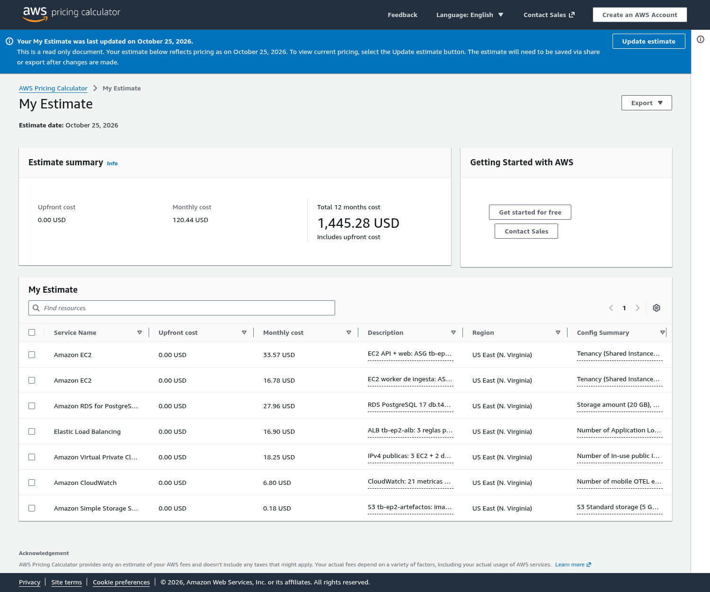
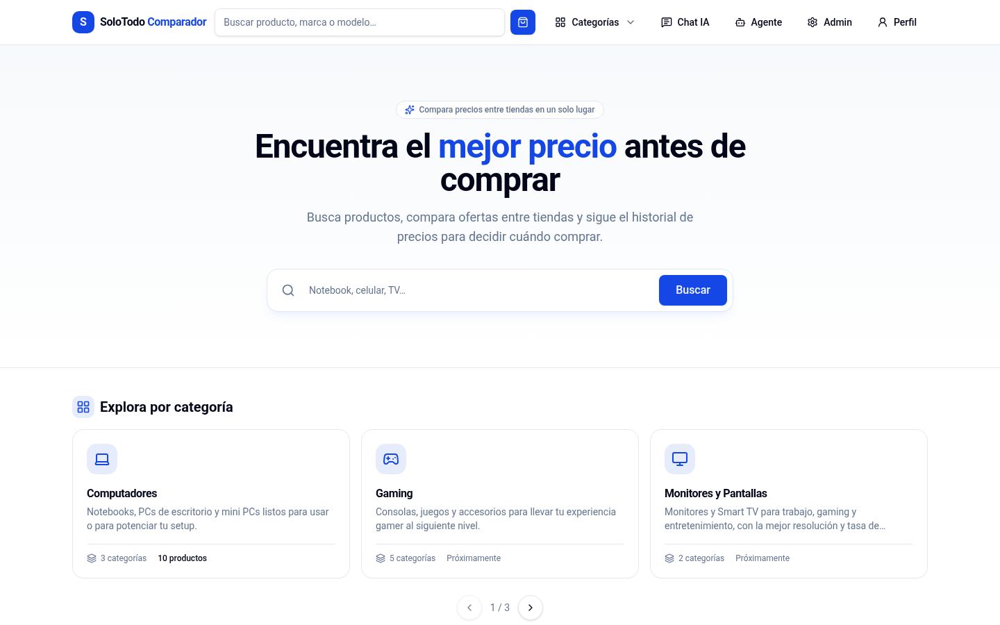
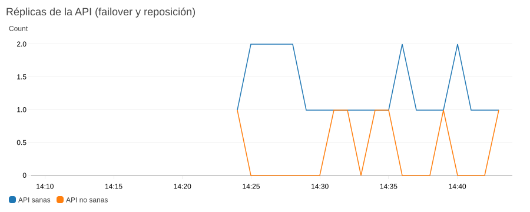
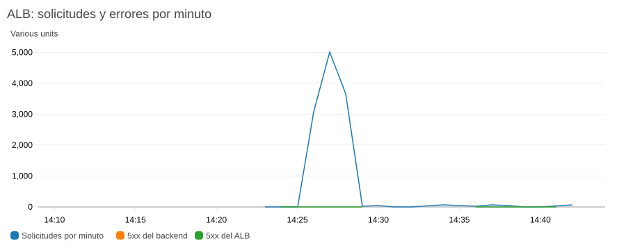
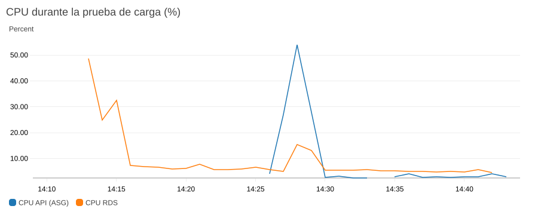
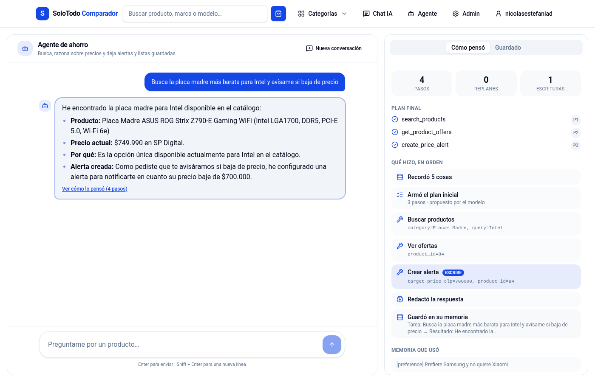
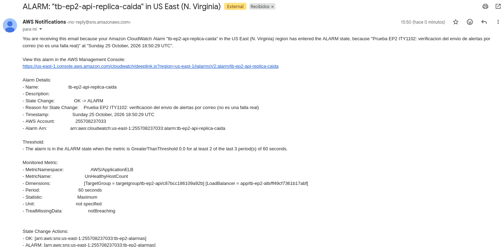
FROM python:3.12-slim AS deps # etapa 1
RUN python -m venv /opt/venv \
&& /opt/venv/bin/pip install .
FROM python:3.12-slim # etapa 2
RUN useradd --create-home --uid 10001 app
COPY --from=deps /opt/venv /opt/venv
COPY --chown=app:app app ./app
USER app
HEALTHCHECK --interval=15s CMD python -c \
"urllib.request.urlopen('http://127.0.0.1:8000/health')"
CMD alembic upgrade head && \
uvicorn app.main:app --workers 2 --proxy-headers
# ECS Fargate (infra/ecs/servicio-api.json)
cpu: 512 · memory: 1024 · desiredCount: 2
subnets: privada-1a, privada-1b
deploymentConfiguration:
minimumHealthyPercent: 100
maximumPercent: 200
deploymentCircuitBreaker: {enable, rollback}
autoscaling: min 2 · max 6 · CPU 60 %
secrets: DATABASE_URL, GEMINI_API_KEY
← Secrets Manager
# Alternativa EKS (infra/kubernetes/):
# Deployment + HPA + PDB + topologySpread por zona
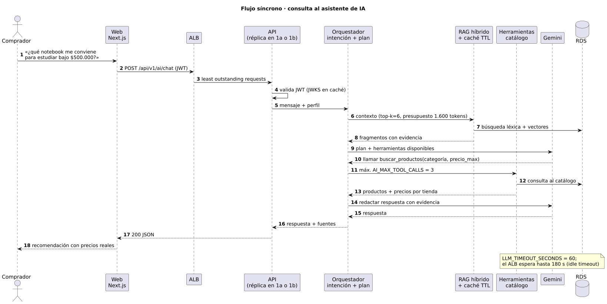
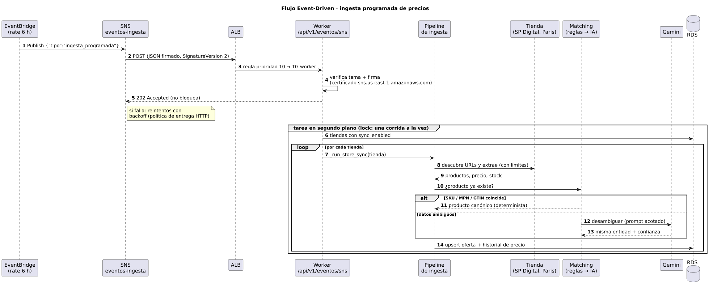
Material reproducible en el repositorio: EP2_ITY1102/infra/ (scripts de despliegue, prueba de carga,
failover, exportación de gráficos y presupuesto), EP2_ITY1102/diagramas/ (fuentes PlantUML) y
EP2_ITY1102/evidencia/.
| Término | Definición |
|---|---|
| ALB | Application Load Balancer: balanceador de capa 7 que enruta por ruta y revisa la salud de los destinos. |
| ASG | Auto Scaling Group: mantiene un número de instancias, las reparte entre zonas y reemplaza las no sanas. |
| Multi-AZ | Despliegue en dos o más zonas de disponibilidad de una región para tolerar la caída de una. |
| RPO / RTO | Pérdida de datos máxima tolerada / tiempo máximo para recuperar el servicio. |
| Pub/Sub | Patrón en que un productor publica eventos en un tema sin conocer a sus consumidores. |
| Health check | Consulta periódica (/health) con la que el ALB decide si una réplica recibe tráfico. |
| StoreOffer | Oferta concreta de un producto canónico en una tienda, a un precio y con un historial. |
| RAG | Retrieval-Augmented Generation: el LLM responde con fragmentos recuperados del catálogo como evidencia. |